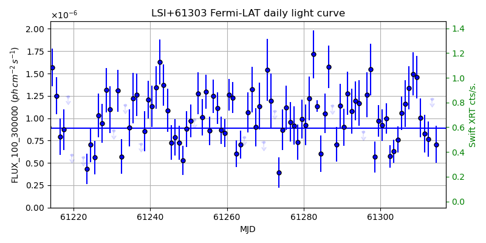
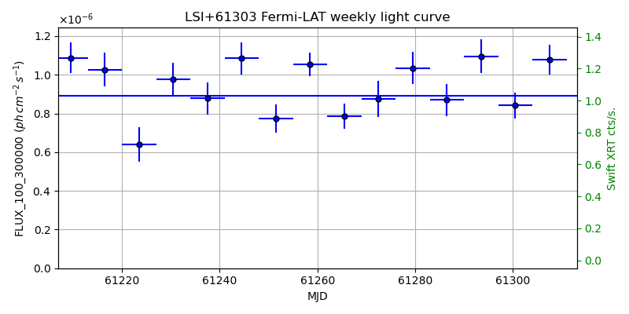
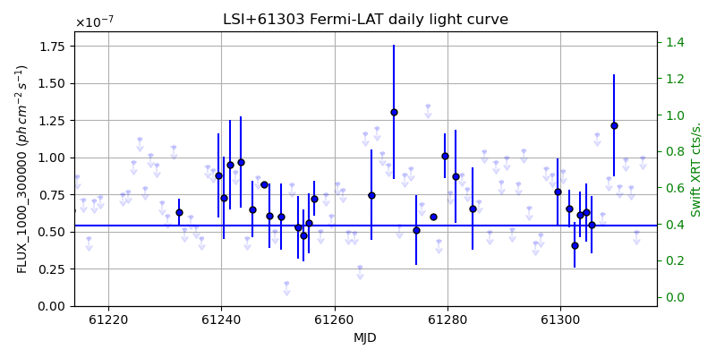
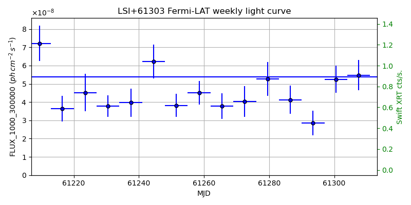

LAT Lightcurve site: https://fermi.gsfc.nasa.gov/ssc/data/access/lat/msl_lc/source/LSI_p61_303
Swift site: https://www.swift.psu.edu/monitoring/source.php?source=LSI+61303
NED: Query
Time of last update of this page: UT: 2026-10-02 15:13 (MJD: 61315.634)
| Property | Value |
|---|---|
| R.A. | 2:40:31.44 |
| Dec. | 61:13:44.4 |
| z | 0.000 |
| 3FGL SpectrumType | LogParabola |
| 3FGL PL Index | |
| 3FGL Flux_100_300000 | 8.90e-07 1 / (s cm2) |
| 3FGL Flux_1000_300000 | 5.39e-08 1 / (s cm2) |
| 3FGL Flux >200 GeV | 7.50e-12 1 / (s cm2) |
| 3FGL Extrap. Crab >200 GeV | 0.03 |
| 3FGL Flux After EBL Absorption >200GeV | 7.50e-12 1 / (s cm2) |
| 3FGL EBL Crab Fraction >200GeV | 0.03 |

| MJD | dMJD | Flux | dFlux | Frac3FGL | FracCrab>200GeV | EBLFracCrab>200GeV |
|---|---|---|---|---|---|---|
| 61310.50 | 0.50 | 1.01e-06 | 2.18e-07 | 1.13 | 0.04 | 0.04 |
| 61311.50 | 0.50 | 8.29e-07 | 2.11e-07 | 0.93 | 0.03 | 0.03 |
| 61312.50 | 0.50 | 7.68e-07 | 1.96e-07 | 0.86 | 0.03 | 0.03 |
| 61313.50 | 0.50 | 1.22e-06 | 0.00e+00 | 0.00 | 0.00 | 0.00 |
| 61314.50 | 0.50 | 7.05e-07 | 2.07e-07 | 0.79 | 0.03 | 0.03 |

| MJD | dMJD | Flux | dFlux | Frac3FGL | FracCrab>200GeV | EBLFracCrab>200GeV |
|---|---|---|---|---|---|---|
| 61279.50 | 3.50 | 1.04e-06 | 8.32e-08 | 1.16 | 0.04 | 0.04 |
| 61286.50 | 3.50 | 8.69e-07 | 8.34e-08 | 0.98 | 0.03 | 0.03 |
| 61293.50 | 3.50 | 1.10e-06 | 8.77e-08 | 1.23 | 0.04 | 0.04 |
| 61300.50 | 3.50 | 8.41e-07 | 6.72e-08 | 0.94 | 0.03 | 0.03 |
| 61307.50 | 3.50 | 1.08e-06 | 7.69e-08 | 1.21 | 0.04 | 0.04 |

| MJD | dMJD | Flux | dFlux | Frac3FGL | FracCrab>200GeV | EBLFracCrab>200GeV |
|---|---|---|---|---|---|---|
| 61310.50 | 0.50 | 8.08e-08 | 0.00e+00 | 0.00 | 0.00 | 0.00 |
| 61311.50 | 0.50 | 9.90e-08 | 0.00e+00 | 0.00 | 0.00 | 0.00 |
| 61312.50 | 0.50 | 8.01e-08 | 0.00e+00 | 0.00 | 0.00 | 0.00 |
| 61313.50 | 0.50 | 4.98e-08 | 0.00e+00 | 0.00 | 0.00 | 0.00 |
| 61314.50 | 0.50 | 1.00e-07 | 0.00e+00 | 0.00 | 0.00 | 0.00 |

| MJD | dMJD | Flux | dFlux | Frac3FGL | FracCrab>200GeV | EBLFracCrab>200GeV |
|---|---|---|---|---|---|---|
| 61279.50 | 3.50 | 5.27e-08 | 9.16e-09 | 0.98 | 0.03 | 0.03 |
| 61286.50 | 3.50 | 4.12e-08 | 7.70e-09 | 0.76 | 0.02 | 0.02 |
| 61293.50 | 3.50 | 2.86e-08 | 6.74e-09 | 0.53 | 0.02 | 0.02 |
| 61300.50 | 3.50 | 5.25e-08 | 7.53e-09 | 0.97 | 0.03 | 0.03 |
| 61307.50 | 3.50 | 5.47e-08 | 8.28e-09 | 1.01 | 0.03 | 0.03 |
--------------------------------------------------------- Using user-supplied coords: 2:40:31.44 61:13:44.4 2000 --------------------------------------------------------- FLWO UT night of: 2026-10-03 Local Sid. @ Midnight: 00:24 Sunset (-15.0) (local, UT): 19:14 02:14 Sunrise (-15.0) (local, UT): 05:12 12:12 Moonrise (local, UT): 22:48 05:48 Moonset (local, UT): Moon phase: 0.53 --------------------------------------------------------- AzTime LSID UT Obj_el Obj_az Mn_el Mn_az Sep. --------------------------------------------------------- 19:14 19:37 02:14 20.3 29.4 -28.5 20.1 49.6 19:44 20:07 02:44 23.5 31.1 -26.2 26.7 49.8 20:14 20:37 03:14 26.9 32.5 -23.2 32.8 50.0 20:44 21:07 03:44 30.4 33.5 -19.6 38.5 50.2 21:14 21:37 04:14 33.9 34.1 -15.7 43.6 50.4 21:44 22:07 04:44 37.5 34.3 -11.3 48.4 50.5 22:14 22:37 05:14 41.1 33.9 -6.5 52.7 50.7 22:44 23:07 05:44 44.6 32.9 -0.8 56.7 50.9 23:14 23:37 06:14 48.0 31.2 3.8 60.4 51.0 23:44 00:07 06:44 51.2 28.6 9.1 63.9 51.2 00:14 00:38 07:14 54.1 25.0 14.6 67.1 51.3 00:44 01:08 07:44 56.6 20.4 20.3 70.2 51.5 01:14 01:38 08:14 58.5 14.8 26.1 73.1 51.6 01:44 02:08 08:44 59.8 8.2 32.1 76.0 51.7 02:14 02:38 09:14 60.3 1.0 38.1 78.8 51.8 02:44 03:08 09:44 60.0 353.8 44.2 81.7 52.0 03:14 03:38 10:14 59.0 347.0 50.3 84.8 52.1 03:44 04:08 10:44 57.2 341.1 56.5 88.1 52.2 04:14 04:38 11:14 54.9 336.2 62.7 91.9 52.3 04:44 05:08 11:44 52.1 332.3 68.9 96.9 52.4 05:12 05:37 12:12 49.1 329.6 74.7 103.8 52.5 --------------------------------------------------------- Dark hours >55 deg.: 0.00